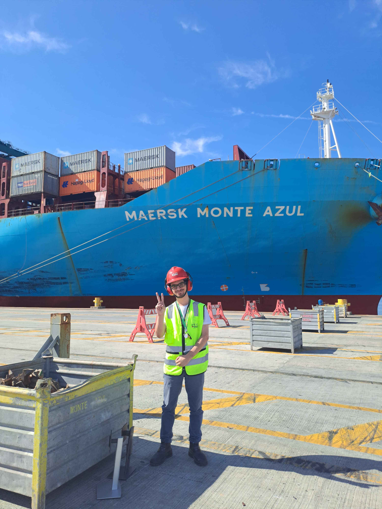

Sobre mim
Olá, meu nome é João, tenho 20 anos, moro em Itapoá - Santa Catarina, sou estudante de Ciência da Computação na Uninter e atuo como Auxiliar Administrativo de Service Desk do Porto Itapoá
Tenho uma paixão por computação desde pequeno, e tenho muita facilidade com o que englobe esta área
Como hobbies, tenho grande amor por fotografias de paisagens e animais.
tenho grande apreço por carros e motos, e nas horas vagas gosto de jogar Car Mechanic Simulator.

Formação
Ciência da Computação - Uninter -> 2024/2028
Situação - CURSANDO
Curso de Linux - ALURA
Situação - CURSANDO
Portfólio
Todo grande programador começa em algum lugar. Atualmente, meu principal projeto publicado é este, desenvolvido com dedicação para ser a vitrine das tecnologias que conheço e o ponto de partida para próximos desafios.